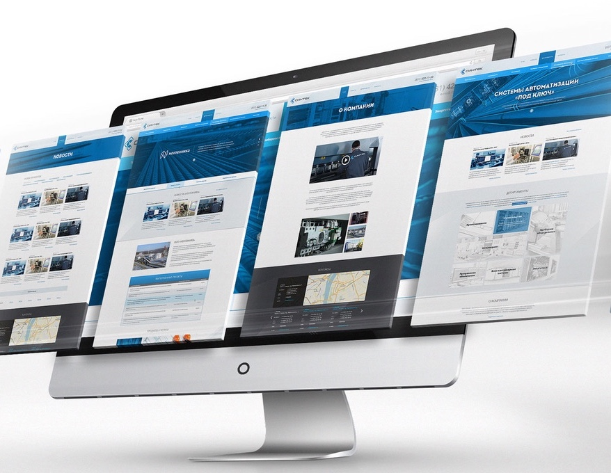

Создание сайтов. Продвижение сайтов
|
Для чего бизнесу сайт? Сначала важно понять, что сайт решает ограниченное количество задач бизнеса и может стать основным или дополнительным источником привлечения клиентов. Сайт поможет решить следующие задачи: - привлечение клиентов - уменьшить расходы: экономия на персонале и аренде помещений - позволяет пользоваться бизнесу десятками инструментов интернет-маркетинга: начиная с таргетированной рекламы и заканчивая e-mail рассылками - отслеживание статистик посещений, количество заказов, онлайн-покупок - работа с аудиторией: опросы, анкеты, голосования, чтобы лучше узнать свою аудиторию её потребности и ожидания - информирование аудитории о новых товарах, акциях и других изменениях - создание имиджа, сайт - это лицо вашего бизнеса в интернете - выход бизнеса на более высокий уровень сервиса, клиент может посмотреть всю информацию о товаре или услуге, выбрать для себя способ оплаты, доставки и получить персональную рекомендацию - круглосуточная работа вашего бизнеса |
 |